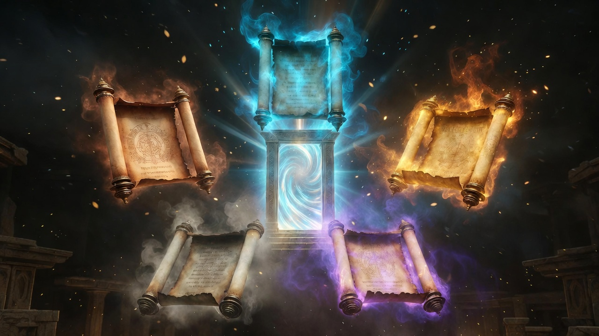
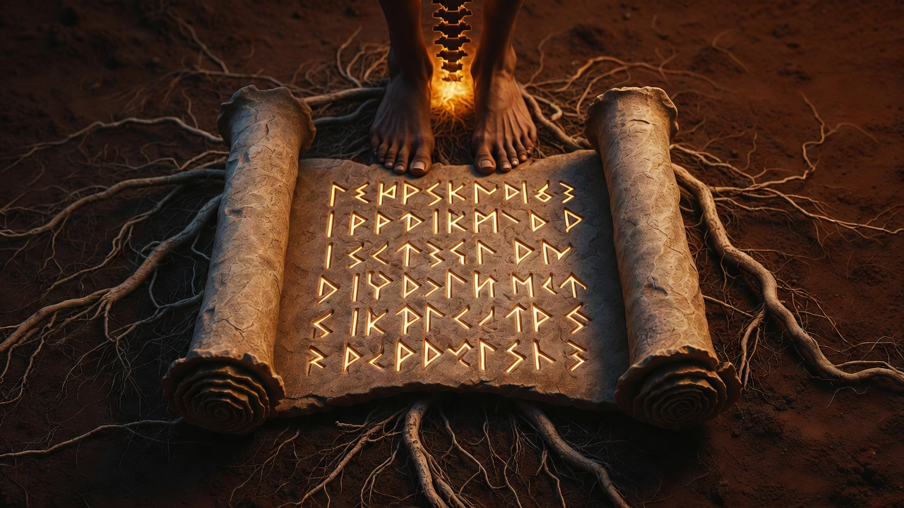
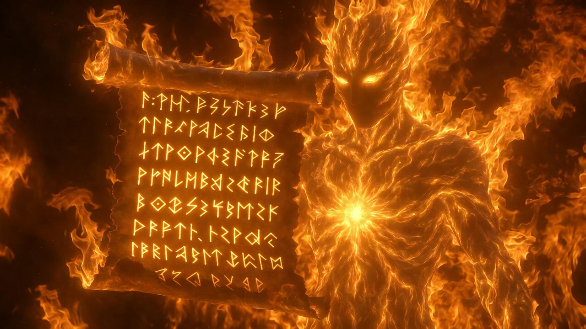
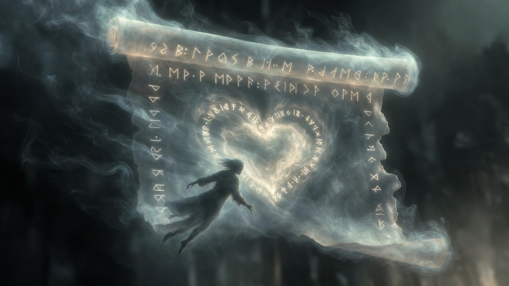
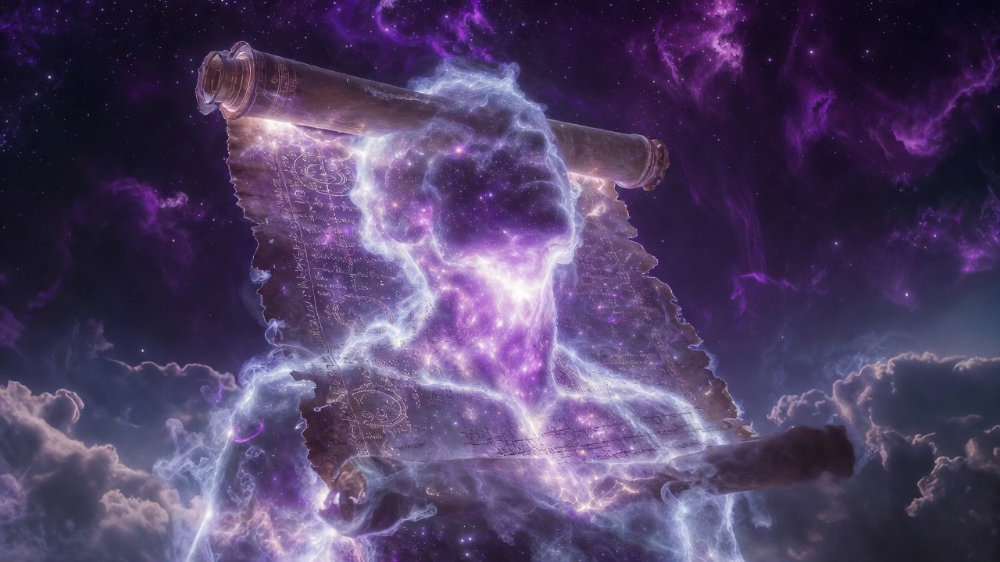

The Five Scrolls
The Elemental Keys That Open What Was Never Locked

The Five Scrolls are the five registers of Expression 3 — the Creative Voice that America was born to broadcast. Earth anchors the material foundation; Water moves the emotional depth; Fire carries the passionate will; Air reaches toward the intellectual horizon; Ether opens the channel of spiritual broadcast. Gate 53 in the USA's Human Design chart — the Development Gate — means this nation never stops beginning. Every scroll you open is a new cycle of creation starting. You are doing what America does at its best: discovering what was already here.
The Marketplace
The door opened. The Tower stood behind you.
You stepped through.
The Marketplace is nothing like you expected. It is not a place of buying and selling in the ordinary sense — though things are exchanged here, constantly. It is a bazaar of the possible: stalls that offer technologies your body already knows how to use, wares that look like objects but function like rememberings.
The smell is different from the Tower. The Tower smelled of paper and anxiety. The Marketplace smells of wood smoke, and rain on stone, and something you can't name — something older than any smell you know from inside the Tower. You realize it's simply outside. You've been inside so long you forgot what outside smells like.
You are not here to browse. You are here because five things have been waiting for you, and they can feel you approaching.
The Hand Keys: What You Carried Out
Before you find the scrolls, the three gestures from the Tower's exit come alive in your hands. You used them instinctively in the final descent; now, in the open air, you feel what they actually are.
The first gesture — thumb to index finger — you now know has a name: Gyan Mudrā. Or rather, jñāna mudrā, from the Sanskrit root shared with the English word "know." Jñāna doesn't mean knowledge in the Tower sense — accumulated data, stacked credentials. It means gnosis: the kind of knowing that arrives whole, without argument. When the Pedant was speaking in credentials and authority, this gesture — this small circle of thumb and fingertip — was the physical act of choosing your own direct experience over his inherited testimony. You hold it now and feel why.
The second — hands in lap, thumbs forming a triangle — this is Dhyāna Mudrā. From dhyāna, from a Proto-Indo-European root meaning "to place." The gesture of placing your attention, deliberately, the way you'd set something fragile down on solid ground. The triangle of your thumbs is the most stable shape in geometry. The Tower was always pulling you upward. This gesture said: stay here.
The third — thumb to ring and pinky, index and middle rising — this is Prāṇa Mudrā. Prāṇa from a root meaning "to fill." The gesture of fullness. Not the performance of fullness. Not the credential of fullness. The two extended fingers don't point toward achievement — they point toward source. You are not empty. You were never empty. The Tower just convinced you that you were, so you'd keep climbing to fill yourself. You were already full. This gesture is the physical memory of that fact.
Use them. Use them now, before the scrolls. They are your foundation kit — the three positions your hands return to when the next layer of the game tries to pull you back in. A quick reference for when you need them:
| Gesture | Formation | When | Frequency with SynSync |
| Gyan Mudrā | Thumb tip to index tip, other fingers extended | Credential anxiety; when you need direct knowing over received authority | 963 Hz + 40 Hz Gamma |
| Dhyāna Mudrā | Hands in lap, thumbs touching, triangle formed | Climbing compulsion; when urgency pulls | 432 Hz + 10 Hz Alpha |
| Prāṇa Mudrā | Thumb to ring and pinky; index and middle extended | Energy depletion; after comparison drains you | 396 Hz + 7.83 Hz Schumann |
These are not exercises. They are interfaces. Your nervous system already responds to them. You're not building a new habit — you're remembering an old one.
The Scrolls You Didn't Know You Were Carrying
The ancient yogis understood what modernity forgot: the human body is not separate from the natural world. It is a microcosm of it. The earth beneath your feet, the water in your blood, the fire of your metabolism, the air in your lungs, the space that holds your thoughts — these are not metaphors. They are the raw materials of consciousness. They were called the Pañca Mahābhūtas — the Five Great Elements — and they are the architecture of everything that exists, including you.
In the Marketplace, there are five stalls arranged in a pentagon. Each holds a scroll.
The scrolls are old. Older than paper. They feel, when you pick them up, like something that was made specifically for your hands — which is strange, because they predate you by millennia. This is what the Marketplace understands that the Tower never did: some things are universal. Not because they were imposed universally, but because they were discovered universally, by every culture that paid enough attention to the body they were born into.
The First Scroll: Earth

You press your heel to the stone floor of the first stall, and something in you remembers ground. Not the concept of ground. Ground itself.
The remembering has a frequency — 7.83 cycles per second, the Earth's own electromagnetic pulse, the Schumann Resonance, steady since before language had a word for it. You don't learn this. You feel it. Your spine settles. Something in your gut stops bracing.
The first scroll is Pṛthivī — from pṛthu, meaning broad and expansive. The broad covering. The ground that holds all other elements. And the text in this scroll, if you could read it, would say what the fifteenth-century Haṭha Yoga Pradīpika says in its third chapter: that a person who completes the earth dharanā — the earth seal — cannot be injured by earthly elements. No earthly element can harm them. They walk over the land, freed from a particular kind of death.
Not physical invulnerability. Something more useful: the capacity to remain unmoved by the shocks of material existence. Financial loss, social rejection, physical discomfort — these are "earthly elements" that injure most people at the level of identity. The earth seal develops immunity not to the events, but to their power over your center of gravity.
The physical technique is called Mahā Mudrā — the Great Seal. Mahā from a root meaning "to measure as supreme." Mudrā — the gesture that gives joy, or the measured gesture that seals energy. Both etymologies point to the same thing: something recognized as complete.
The position: sit with your left heel pressing gently at the perineum — the floor of the pelvic bowl, the body's literal ground point. Extend your right leg, grasp the toes with your right hand. Drop your chin to your chest — this is Jālandhara Bandha, the throat lock, which holds the energy you're about to gather. Inhale deeply, drawing breath and attention downward. Visualize roots extending from your base into the earth below you. Hold. Then exhale slowly.
Practice equally on both sides.
When you hold this position, even imperfectly, even just in imagination, you'll feel what the Tower always prevented: the sensation of being held by something that predates you and will outlast you. The earth is not impressed by credentials. It holds you regardless.
For sound support, SynSync maps the earth dharanā to 7.83 Hz Schumann combined with 396 Hz — the frequency the Solfeggio tradition associates with root liberation, releasing fear from the base. Ten to fifteen minutes in this combination, with Mahā Mudrā held or visualized, creates the conditions for genuine grounding rather than its performance.
The mantra seed for this element is LAM. Say it once. Feel where it lands in your body. The answer is the lesson.
The Second Scroll: Water
You don't pick up the second scroll so much as it finds you. You've been avoiding this stall. The water element stall smells like grief — but not the closed, locked grief of the Tower. Open grief. Moving grief. The kind that, once you let it move, becomes something else.
Ap — from the Proto-Indo-European root h₂ep-, water, river. The flowing one. The element that takes the shape of its container. Where earth is solid and stable, water is fluid and adaptive. And the text here says: opening the water chakra frees the yogin from sorrow.
Not from feeling sorrow. From being destroyed by it.
Most people are either emotionally frozen — unable to feel, a kind of death — or emotionally flooded, overwhelmed, unable to function. The water dharanā creates the third option: flow. The capacity to feel without drowning. To experience sorrow without being consumed by it.
The technique is Mahā Bandha — the Great Lock. Bandha from bandh, to bind. The paradox of haṭha yoga: we bind energy to liberate it. The binding creates pressure; the pressure creates movement; the movement creates flow. From the same position as Mahā Mudrā, you place the right foot on the left thigh, apply both the chin lock and the root lock — contracting the perineum gently, drawing the pelvic floor upward. Hold the breath. Visualize a silver crescent moon, cool and fluid, just below the navel. Exhale slowly, releasing the locks.
What you're doing, physiologically, is learning to direct the life force rather than leak it. The water element doesn't flow randomly — it flows through channels. The bandha creates the channel. The emotion that felt like flooding becomes directed movement instead.
SynSync: 6 Hz theta combined with 417 Hz. Fifteen to twenty minutes. The theta state is where emotional processing happens below the level of conscious thought — where the body integrates what the mind has been avoiding. The 417 Hz carrier facilitates change: not forced change, but the natural movement of water finding its level.
The mantra seed: VAM. The vowel opens the belly. Say it three times and notice what wants to move.
The Third Scroll: Fire

The fire stall is warm from twenty feet away. The scroll there glows faintly. You feel it before you touch it — a kind of resolve in the gut, the specific sensation of knowing what you need to do and being willing to do it despite fear.
Tejas — from tij, to sharpen, to whet. The sharpener. The illuminator that cuts through darkness. Fire transforms: it is the element of metabolism, digestion, and spiritual illumination. And the text says opening the fire chakra removes the fear of death.
Not metaphorically. Something in the body actually changes when you meet fire directly and discover you are not consumed.
The Haṭha Yoga Pradīpika calls the technique for this Mahā Vedha — the Great Piercing. Vedha from vyadh, to pierce, to penetrate. The penetration that opens. From the Mahā Bandha position, with a full inhalation held and the chin lock applied, you place your hands on the ground beside your hips and gently lift and drop the base of the spine — a subtle impact that sends the concentrated prāṇa from the lower channels into the central channel, Suṣumnā, the spine itself. Hold until the energy feels completely still — the text says "as if dead." Then exhale slowly.
What pierces, in this practice, is not the body — it's the belief that you are fragile. The Alchemist of Inertia, whom you'll meet in the dungeons, runs on your conviction that your body is a machine that breaks easily and must be protected at all costs. Fire reveals that the body is a transformer, not a container. It doesn't hold life force. It runs it through, upgrades it, and passes it on.
SynSync: 40 Hz gamma combined with 528 Hz. Ten to fifteen minutes. The gamma state is associated with peak cognition and the integration of consciousness across regions — the neural correlate of insight. The 528 Hz carrier is used in some traditions as a transformation frequency. Together, they create the conditions for the metabolic shift that fire represents.
The mantra seed: RAM. The solar plexus contracts slightly on the final consonant. This is intentional. You are meeting resistance. You are not destroyed by it.
The Fourth Scroll: Air

The air stall has no walls. Which makes sense.
Vāyu — from vā, to blow. The blower. The mover that carries all other elements. Where fire transforms, air liberates — it carries what fire has purified upward and outward. And the text says the air dharanā confers freedom from all pain and the ability to move through the sky at will.
Not levitation. Something more immediately useful: the capacity to move through situations without resistance. The earth person stands firm. The water person flows. The air person simply passes through. Opposition cannot find purchase on what does not insist on solidity.
The technique is Uḍḍīyana Bandha. Uḍḍīyana from ut (up) + ḍī (to fly). The flying up. After a full exhalation — emptied completely — draw the belly strongly back toward the spine. Lift the diaphragm up into the chest cavity. Hold the breath out while maintaining this lock. Release by relaxing the abdomen before inhaling. This is the flying up of prāṇa through the central channel — not metaphorical flight, but the literal upward movement of life force through Suṣumnā.
The HYP calls this the lion that conquers the elephant of death, and the key that unlocks the door of liberation. These are not small claims. What they describe is the experience of rising above the plane of the game entirely — seeing the Tower of Babel from altitude, where its linguistic traps are visible as patterns rather than realities.
SynSync: 639 Hz heart frequency combined with 852 Hz third eye clarity. Ten to fifteen minutes, with Uḍḍīyana Bandha practiced between sessions of stillness. The mantra is YAM — the heart chakra's seed syllable. You say it and feel the chest open, and you understand why the heart is the air center and not just the water one: because love, like air, cannot be possessed. It can only pass through.
The Fifth Scroll: Ether

The fifth scroll is not in a stall.
You find it in the space between the other four. It was always there — the negative space of the arrangement, the gap that the other elements circle around. It has always been there. You simply couldn't see it while you were looking for something.
Ākāśa — from ā (toward) + kaś (to be visible). The visible expanse. Not a substance but an absence: the space that allows substance to be. And the text says mastering ākāśa opens the door to liberation itself, granting not invulnerability, not flow, not courage, not freedom from gravity — but dissolution of the sense that there was ever a "you" who needed any of those things.
This is the most abstract of the five and also the most direct. It cannot be practiced in the same way. You cannot "do" the ether dharanā the way you do Mahā Mudrā. The moment you try to do it, you have already left it. It is the practice of ceasing to practice — remaining as awareness, without the one who is aware.
The technique is the beginner form of Khecarī Mudrā — the Sky-Walker. Khecarī from kha (space, sky, ether) and car (to move, to walk). The one who walks through space. Draw the tongue back gently and touch its tip to the soft palate. Breathe normally through the nose. Allow the sensation of the throat-space — the hollow behind the soft palate — to expand into awareness. Do not direct. Do not visualize. Simply inhabit the space.
You cannot force spaciousness. You can only stop filling it.
The advanced form of Khecarī — where the tongue reaches further, where the nectar drips, where the body becomes what the text calls "divine and immortal" — belongs to Chapter 4. For now, this beginner form is enough. It is, in fact, everything. Every other practice leads here: to this moment of not needing to practice, because you have arrived in the only space practice was ever pointing toward.
SynSync: 963 Hz combined with silence — no modulation, just the carrier. Fifteen to twenty minutes. No mantra. Or rather: HAM (the throat seed syllable) fading naturally into silence. When the mantra stops because you forgot to keep saying it, and you don't notice for several minutes — that is the practice succeeding.
The Five Keys, Held Together
You stand in the center of the Marketplace with all five scrolls. The pentagon arrangement is visible now in a different way — not as five separate stalls but as a single system. Not as five techniques but as five aspects of one recognition.
You are composed of all five elements. You always were. Earth gave you your bones; water gave you your blood; fire gave you your warmth; air gave you your breath; ether gave you the space in which all of this could happen. The dharanās are not adding anything to you. They are reminding you of what you are made of.
- Earth (Mahā Mudrā) / LAM: The ground that nothing can move.
- Water (Mahā Bandha) / VAM: The flow that nothing can stop.
- Fire (Mahā Vedha) / RAM: The flame that nothing can resist.
- Air (Uḍḍīyana Bandha) / YAM: The wind that nothing can catch.
- Ether (Khecarī — beginner) / HAM → silence: The space in which all of this happens.
Together they form the Pañca Mahābhūtas as a complete architecture of human consciousness. Each one unlocks a dungeon. Each one dissolves a boss. Each one is already yours, because you are already composed of all five.
The Triveṇī — the confluence of Earth, Water, and Fire — is your foundation. Air and Ether are where that foundation leads. Master them in order, and the Goddess within begins to stir.
The Full Sequence (If You Want to Walk All Five)
If you choose to practice the complete Five Scrolls sequence — fifty minutes, working each element in turn — here is what you carry:
Begin with Earth. Mahā Mudrā, left heel at perineum. SynSync at 7.83 Hz + 396 Hz. Say LAM. Visualize roots. Let your spine settle. Ten minutes.
Move to Water. Mahā Bandha, foot on opposite thigh, both locks engaged. 6 Hz + 417 Hz. Say VAM. Let the silver river through. Ten minutes.
Move to Fire. Mahā Vedha, the gentle lift and drop. 40 Hz + 528 Hz. Say RAM. Let it burn what isn't yours. Ten minutes.
Move to Air. Uḍḍīyana Bandha, belly to spine after full exhale. 639 Hz + 852 Hz. Say YAM. Let the chest open. Ten minutes.
Rest in Ether. Tongue to soft palate. 963 Hz + silence. HAM, fading. Then nothing. Ten minutes.
Sit in stillness for five minutes after. Feel the integration. You have not learned five things. You have remembered one thing five ways.
What You Carry from the Marketplace
| Scroll | Element | Technique | Frequency | Seed | Gift |
| I | Earth (Pṛthivī) | Mahā Mudrā | 7.83 Hz + 396 Hz | LAM | Grounding — nothing can move you |
| II | Water (Ap) | Mahā Bandha | 6 Hz + 417 Hz | VAM | Flow — nothing can stop you |
| III | Fire (Tejas) | Mahā Vedha | 40 Hz + 528 Hz | RAM | Transformation — nothing can resist you |
| IV | Air (Vāyu) | Uḍḍīyana Bandha | 639 Hz + 852 Hz | YAM | Freedom — nothing can catch you |
| V | Ether (Ākāśa) | Khecarī (beginner) | 963 Hz + silence | HAM → silence | Liberation — the one who needed protecting dissolves |
Remember: these are not separate. They are a sequence. Earth → Water → Fire → Air → Ether. Foundation → Flow → Transformation → Freedom → Space. The elements are not metaphors. They are the architecture of consciousness.
The dungeons await. You have everything you need.
Turn the keys.